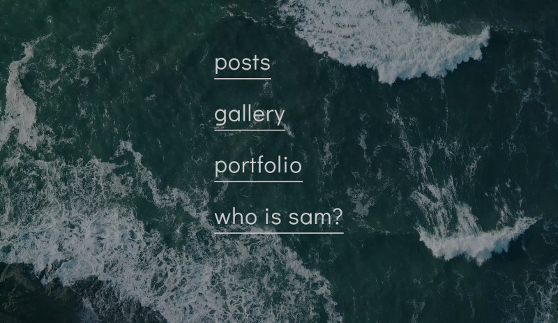

Existen varias formas de comenzar con hugo, pero la que usaré será mediante una imagen docker. En la misma documentación de hugo dan algunas luces de esta opción y recomiendan una imagen a utilizar (no es oficial).
Instalación de docker ¶
Como no es el objetivo actual, suponemos que ya está instalado docker. Si no lo está, existen varios tutoriales rápidos.
Creando el proyecto ¶
Partamos creando un directorio y en el agregaremos una serie de archivos para inicializar todo.
mkdir blog
touch blog/docker-compose.yml
touch blog/.gitignore
Es más sencillo si utilizamos git y github desde el terminal, aunque supongo que descargando los archivos también se logra el mismo resultado.
En este caso utilizaremos el tema “call me sam” desde la librería de temas de hugo..
Se debe ingresar al directorio del proyecto e iniciar un nuevo repositorio. Por gusto utilizo un nombre distinto al default en la rama inicial, aunque para que esto me funcionara tuve que actualizar mi versión de git. Si se utiliza git init funcionará del mismo modo.
cd blog
git init -b main
Con el repositorio git creado es posible clonar a modo de submódulo el tema escogido. Como se menciona antes, descargando los archivos debería funcionar igual. Sea cual sea la opción, el código fuente se mantendrá en el subdirectorio src.
# Se crea el directorio
mkdir src
# Se ingresa
cd src
# Se clona mediante submodulo
git submodule add https://github.com/victoriadrake/hugo-theme-sam.git themes/sam
Al terminar de descargar, el mismo tema traerá un sitio de ejemplo. Desde el se copiarán los archivos para comenzar el proyecto propio.
La copia se puede hacer a mano considerando que la ubicación del sitio de ejemplo sería blog/src/themes/sam/exampleSite. Mediante terminal la copia se puede hacer como.
# Estando dentro src
cp -r themes/sam/exampleSite/content/ ./content/
cp -r themes/sam/exampleSite/static/ ./static/
cp themes/sam/exampleSite/config.toml ./
Con esto deberíamos tener una estructura de directorio de la siguiente forma.
src/
config.toml
content/
static/
themes/
De esta manera se tiene completa la estructura de directorios y archivos necesarios para el proyecto seleccionado.
Se podría haber logrado el mismo efecto utilizando la instalación de hugo, pero justamente habría implicado la instalación de paquetes adicionales. Incluso el tema seleccionado requiere procesar los archivos CSS y por ende requiere la instalación de paquetes adicionales desde npm. Toda esa distracción es la que se evita mediante la imagen docker.
Utilización y construcción ¶
Con los directorios y archivos ya listos, es tiempo de realizar 2 posibles acciónes:
- Servir en vivo y desarrollar
- Construir el sitio final para el posterior deploy
Se pueden manejar ambas acciones con la misma imagen docker y para hacerlo más sencillo, se pueden resumir esas acciones en un único archivo docker-compose.
En la raíz del proyecto se tendrá el archivo creado al principio y en el se escriben las siguientes definiciones.
services:
build:
image: klakegg/hugo:ext-ubuntu
volumes:
- "./src:/src"
server:
image: klakegg/hugo:ext-ubuntu
command: server
volumes:
- "./src:/src"
ports:
- "1313:1313"
Las acciones descritas (build y server) pueden ser comandadas de forma independiente y a grandes rasgos se define lo siguiente:
- image - Imagen a utilizar. En el ejemplo hugo versión extendida en ubuntu
- volumes - Se hace un mapeo para que nuestros archivos sean vistos y procesados en el container.
- command - Acción a ejecutar
- ports - Mapeo de puertos para el live server de desarrollo.
Si se realizó la configuración de usuarios, puede utilizarse el comando docker-compose sin la aplicación de sudo. En caso de que no sea así, se debe agregar sudo al comando.
docker-compose up server
La ejecución del comando debería entregar una visión de terminal similar a esto.
Attaching to blog-server-1
blog-server-1 | Start building sites …
blog-server-1 |
blog-server-1 | | EN
blog-server-1 | -------------------+-----
blog-server-1 | Pages | 30
blog-server-1 | Paginator pages | 0
blog-server-1 | Non-page files | 13
blog-server-1 | Static files | 12
blog-server-1 | Processed images | 12
blog-server-1 | Aliases | 0
blog-server-1 | Sitemaps | 1
blog-server-1 | Cleaned | 0
blog-server-1 |
blog-server-1 | Built in 204 ms
blog-server-1 | Watching for changes in /src/{content,static,themes}
blog-server-1 | Watching for config changes in /src/config.toml
blog-server-1 | Environment: "DEV"
blog-server-1 | Serving pages from memory
blog-server-1 | Running in Fast Render Mode. For full rebuilds on change: hugo server --disableFastRender
blog-server-1 | Web Server is available at http://localhost:1313/ (bind address 0.0.0.0)
blog-server-1 | Press Ctrl+C to stop
Magia, en el navegador se accede a http://localhost:1313/ y se tendrá el esqueleto de nuestro sitio. Ahora es solo intrusear.

En particular para el tema utilizado, se puede comenzar agregando/modificando src/content/posts/.